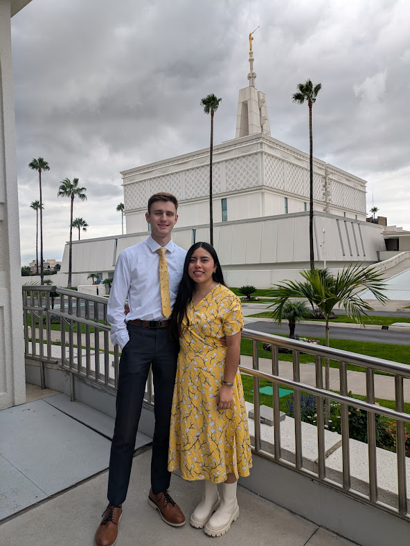
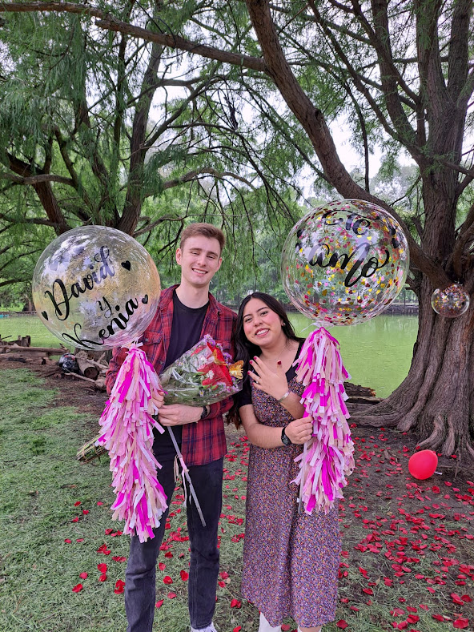
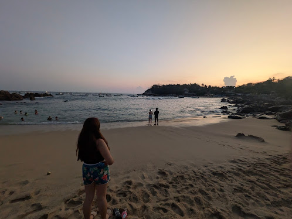

Our story began serving as missionaries in Argentina, where we first met and became good friends. When our missions ended, daily texts kept us close, and before long, we fell in love. Long-distance was never part of the plan, but when it's right, you find a way. David loved visiting Mexico and embracing Kenia's culture, and every visit only confirmed what we already knew, we were meant to be together!

Simply put, we couldn't imagine life without each other. There's an ease and joy in each other's company that made this decision feel effortless, despite the challenge of building a life across two countries. Love has a way of making the complicated feel simple. We are so thrilled to celebrate this moment surrounded by the people we love most. Thank you for being here with us this May!

We're stepping into this new chapter with full hearts and big dreams, to grow together, pursue our goals, and build a life we're proud of. Someday we hope to start a family, and we can't wait to raise children who carry the beauty of two cultures and histories with them. Our story is just beginning, and we're so glad you're part of it!
